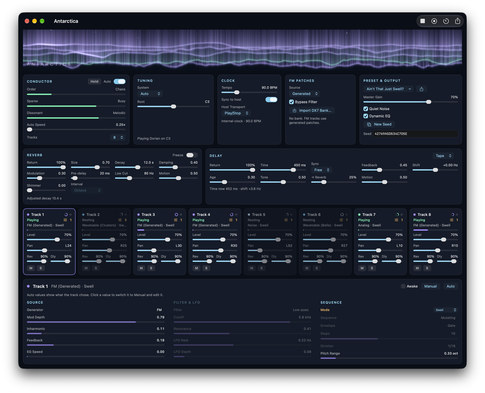
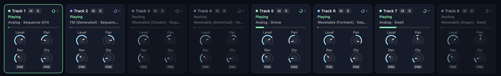
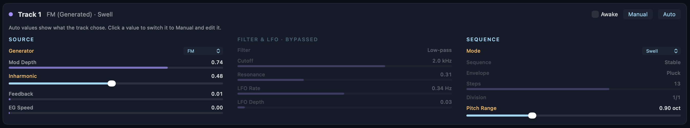
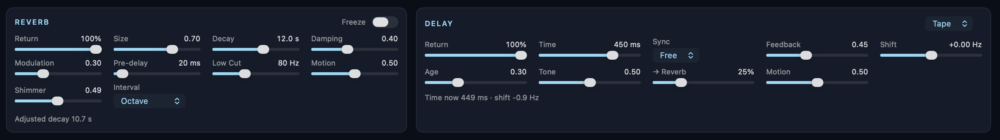

Eight tracks of drones, pulses, and strange noises that play themselves.
A generative instrument for macOS. The Conductor sets the mood. Eight tracks make their own decisions. Let it play for hours or take control at any time.

Three dimensions: order to chaos, sparse to busy, and melodic to dissonant. Set them yourself or let the Conductor drive. The vibe can evolve slowly or change dramatically.
At unpredictable intervals, each track reaches a decision point. It can choose a new sound or pattern. It can take a rest, or jump back into the action. Sequences have independent step counts and rates to encourage polyrhythmic diversity.

Each track employs one of four generators. Generator changes are crossfaded for smooth transitions.
White, pink, and brown noise with crackle. Perfect for wind, surf, or radio static.
Two oscillators with FM and ring modulation. Pure sines, soft triangles, bright saws, and pulses.
Eight banks ranging from organ and formant tones to stretched partials, bells, and clusters.
Six operators and 32 algorithms. Generate new patches on the fly, or use imported DX7 sysex banks.
Track parameters can be set to Auto or Manual. In Auto, the Conductor influences parameter changes. Clicking on a parameter switches it to Manual and locks in your choice. Lock one parameter or the entire track.

Reverb features include shimmer, lossless freeze, and decays of up to 100 seconds. Delay offers tape and bucket-brigade modes, with a pitch shifter in the feedback path for extra psychedelia.

12-TET scales or just intonation ratio sets. Every note has a small detune and a slow drift. Some notes are wrong on purpose.
The same seed creates the same music. Share a seed or save it in a preset.
Render hours of audio to WAV much faster than real time, with a fade out and the full effects tail.
An Audio Unit instrument with host tempo sync and transport. Change the root note on the fly with MIDI.
A Metal visualization displaying each track's level, color, and pulses, along with the mood of the conductor.
Many factory presets to use as a starting point. You can also create your own and share them as files.
After selecting your mood music, set the timer then drift off to sleep. The music will gently fade out on its own.
| System | macOS 15 (Sequoia) or later |
|---|---|
| Computer | Apple Silicon or Intel Mac |
| Formats | Standalone app, Audio Unit v3 instrument |
| Output | Stereo. Export: WAV, 48 kHz, 24-bit |
| CPU | Less than 5% of one core, even on M1. |